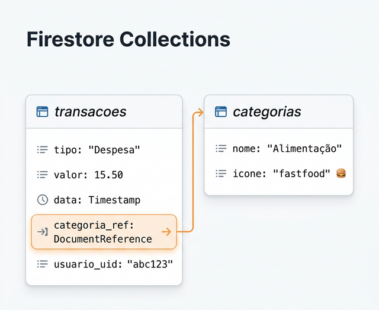

Estudo de Caso 4 — Modelagem de Dados (Firebase)
Objetivo da Semana
Desenhar a estrutura de dados inicial para o Firebase/Firestore (Coleções, Campos e Relações) baseada nos wireframes elaborados. Em seguida, dividir as responsabilidades, alocando os CRUDs para cada membro da equipe.
Passo a Passo da Atividade
Lembrem-se de que no NoSQL não usamos tabelas. O que seu aplicativo vai gravar no banco de documentos? (Ex: transacoes, categorias). Crie um diagrama visual interligando-as e demonstre as referências.
Para cada coleção desenhada no passo 1, liste em texto quais propriedades formarão aquele documento com seu correspondente "tipo" (String, Integer, Double, Boolean, DocumentReference, etc.).
Com as coleções definidas, façam o Rateio: Cada aluno ficará responsável pelo fluxo de C-R-U-D de uma base para as próximas semanas. Tudo tem que ter um responsável.
Para concluir as atividades desta semana, reúna todas as informações e artefatos gerados nos passos anteriores e preencha o template oficial de entrega. Faça uma cópia do documento para a sua conta Google e compartilhe-o com o professor.
📱 Estudo de Caso: FinanCampus
Veja o modelo de dados que o grupo do FinanCampus criou nesta semana.

Coleções identificadas:
- Firebase Authentication — gerenciado automaticamente (e-mail, senha, UID)
- categorias (nome, icone, cor)
- transacoes (tipo, descricao, valor, data, usuario_uid, categoria_ref, created_at)
Relacionamentos:
- 1 Usuário (UID) possui N Transações (1:N)
- 1 Categoria classifica N Transações (1:N)
Decisão do grupo: usar uma única coleção
transacoes com o campo tipo
('Renda' ou 'Despesa') em vez de criar
coleções separadas. O Dropdown de tipo no formulário permite
ao usuário escolher o tipo ao registrar.
Distribuição dos CRUDs (definida nesta semana, após o modelo):
- Ana → Tela de listagem de transações (com filtros)
- Bruno → Formulário de nova transação / edição
- Carla → Dashboard (saldo, gráficos)
- Diego → CRUD completo de Categorias